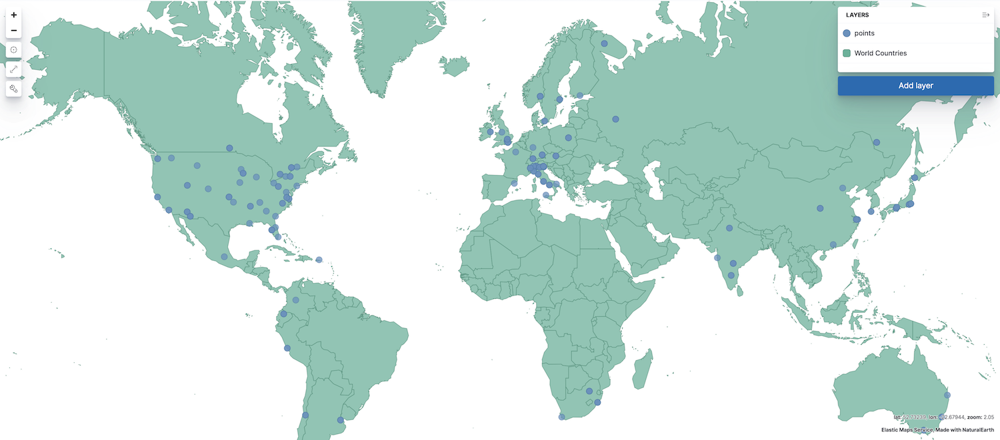

Vector layer
editVector layers display points, lines, and polygons.

To add a vector layer to your map, click Add layer, then select one of the following:
- Choropleth
- Shaded areas to compare statistics across boundaries.
- Clusters
- Geospatial data grouped in grids with metrics for each gridded cell. The index must contain at least one field mapped as geo_point or geo_shape.
- Create index
- Draw shapes on the map and index in Elasticsearch.
- Documents
-
Points, lines, and polyons from Elasticsearch. The index must contain at least one field mapped as geo_point or geo_shape.
Results are limited to the
index.max_result_windowindex setting, which defaults to 10000. Select the appropriate Scaling option for your use case.-
Limit results to 10,000 The layer displays features from the first
index.max_result_windowdocuments. Results exceedingindex.max_result_windoware not displayed. -
Show clusters when results exceed 10,000 When results exceed
index.max_result_window, the layer uses GeoTile grid aggregation to group your documents into clusters and displays metrics for each cluster. When results are less thenindex.max_result_window, the layer displays features from individual documents. -
Use vector tiles. Vector tiles partition your map into tiles.
Each tile request is limited to the
index.max_result_windowindex setting. When a tile exceedsindex.max_result_window, results exceedingindex.max_result_windoware not contained in the tile and a dashed rectangle outlining the bounding box containing all geo values within the tile is displayed.
-
Limit results to 10,000 The layer displays features from the first
- EMS Boundaries
- Administrative boundaries from Elastic Maps Service.
- ML Anomalies
-
Points and lines associated with anomalies. The anomaly detection job
must use a
lat_longfunction. Go to Detecting anomalous locations in geographic data for an example. - Point to point
- Aggregated data paths between the source and destination. The index must contain at least 2 fields mapped as geo_point, source and destination.
- Top hits per entity
- The layer displays the most relevant documents per entity. The index must contain at least one field mapped as geo_point or geo_shape.
- Tracks
- Create lines from points. The index must contain at least one field mapped as geo_point.
- Upload Geojson
- Index GeoJSON data in Elasticsearch.